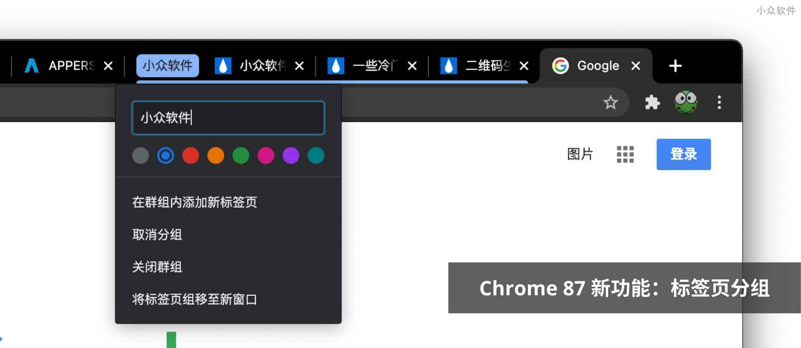
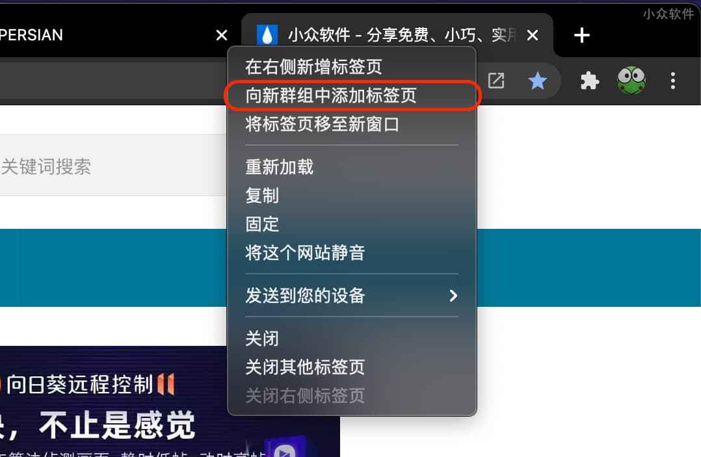
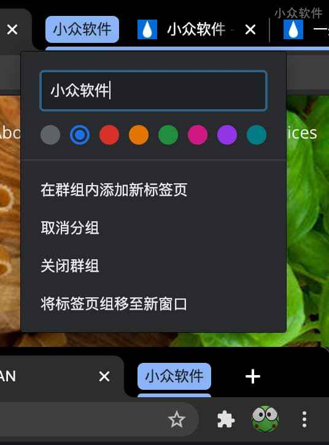
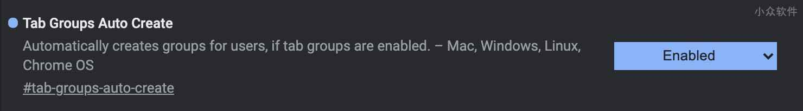

Chrome 87 新功能：标签页分组，可自动分组同网站下标签页
2020 年的最后一个版本 Chrome 87 新增了很多实用性的功能，在支持 地址栏切换标签页 之后， 标签页分组 功能页正式上线了，并且还可以为 同网站 自动创建标签页分组。@Appinn

倒也不是吹捧，见过这么多分组扩展，青小蛙的确觉得 Chrome 官方的标签页分组方式更科学一些。
标签页分组
升级至 Chrome 87 最新版本之后，就自动拥有了这个功能，只需要对着标签页右键，选择 向新群组中添加标签页 ，即可创建分组：

之后便可在其他标签页标题右键时，同样选择 向新群组中添加标签页 就能移动至分组中：
之后，还可以对分组命名，并标记颜色，如果未命名，分组将以小圆点的方式表示，命名后就如下图，点击该名称还能折叠分组：

自动分组
自动分组目前还属于实验性功能，需要在 Chrome://flags 中开启：

开启后，新打开的标签页如果是同网站下，就会自动创建分组。
相关阅读
- 3000时代来临，赢空间活动继续
- Chrome 4.0，用扩展武装它
- Save Pinned Tabs – 保存 Chrome 当前固定标签页、分组、同步
- 赢空间游戏新高 3432 分
- 求一个脱离鼠标仍可网页自动向下滚动的 Chrome 插件
© 2019 青小蛙 for 小众软件 | 加入我们 | 投稿 | 订阅指南
3659b075e72a5b7b1b87ea74aa7932ff
点击这里留言、和原作者一起评论 https://www.appinn.com/chrome-87-tabs-group/